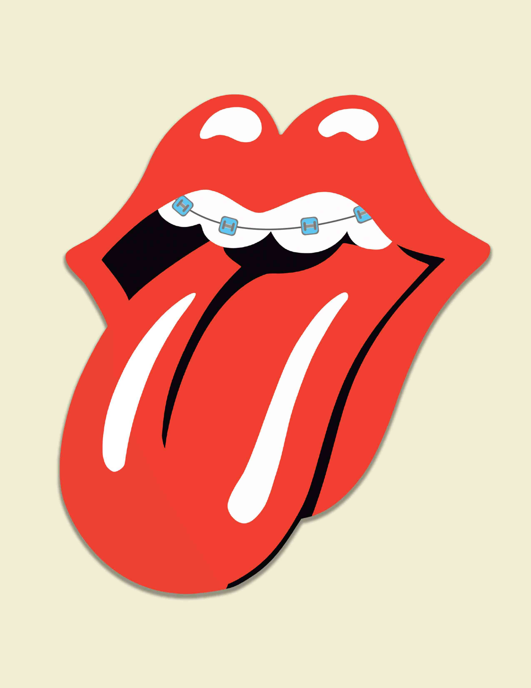

Marshall Vintage
360 advertising camapaign created for Marshall vintage speakers. Marshall established its brand personality through their iconic amps and other sound products made specifcally with rock bands in mind. So we asked, how do we market their new, modern bluetooth speaker while still keeping their vintage tone? The full downloadable package includes our presentation deck, with a series of five print ads, two tv/radio spots, and two interactive extensions of the campaign.
